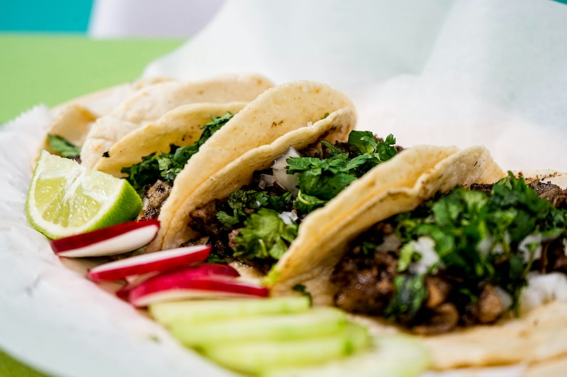

Tacos

Description
This is a recipe for birria tacos. These tacos are made from shredded beef
with special seasonings, and corn tortillas. You can use tortillas you've
made from scratch if you're feeling ambitious, or you can buy corn
tortillas at your local store.
These tacos can also be made with shredded goat meat, but we will not be
discussing that option here.
Ingredients
- corn tortillas
- beef for shredding - chuck steak works well
- seasoning sauce - can be bought in a jar already prepared
Steps
-
cook chuck steak and seasoning in slow cooker or pressure cooker until
falling apart
- shred beef with fork
- heat tortillas on griddle on stove
- add beef to each tortilla - garnish with salsa if desired